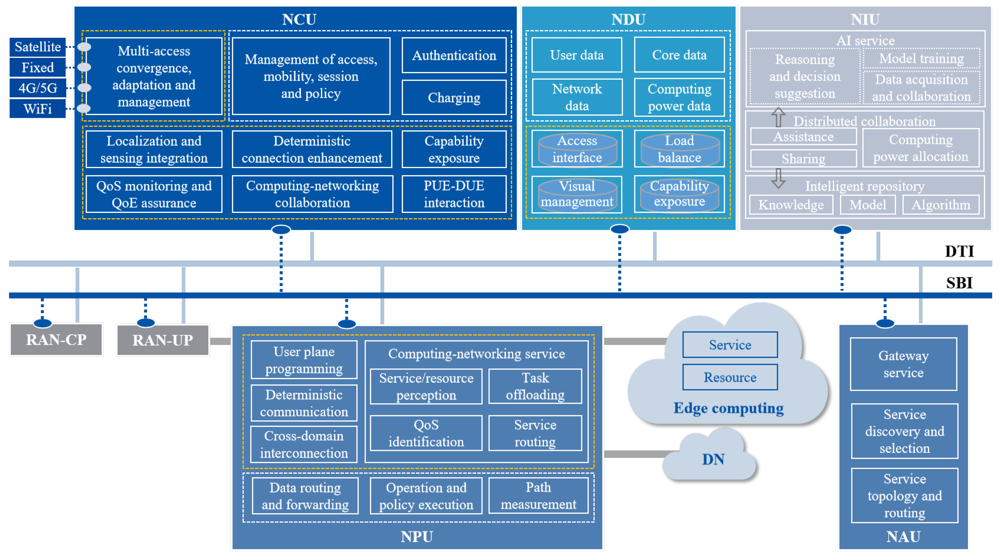
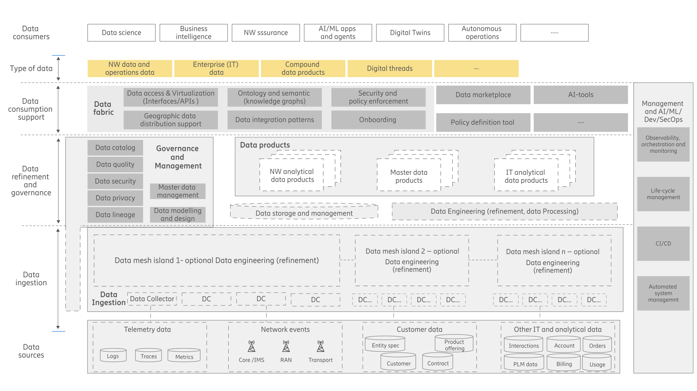
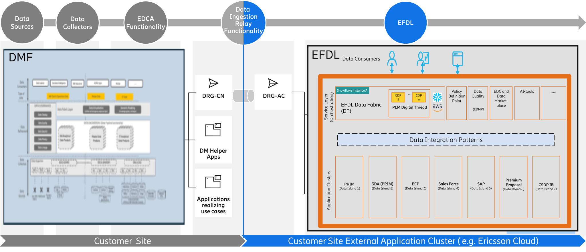
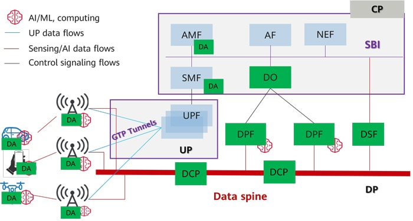
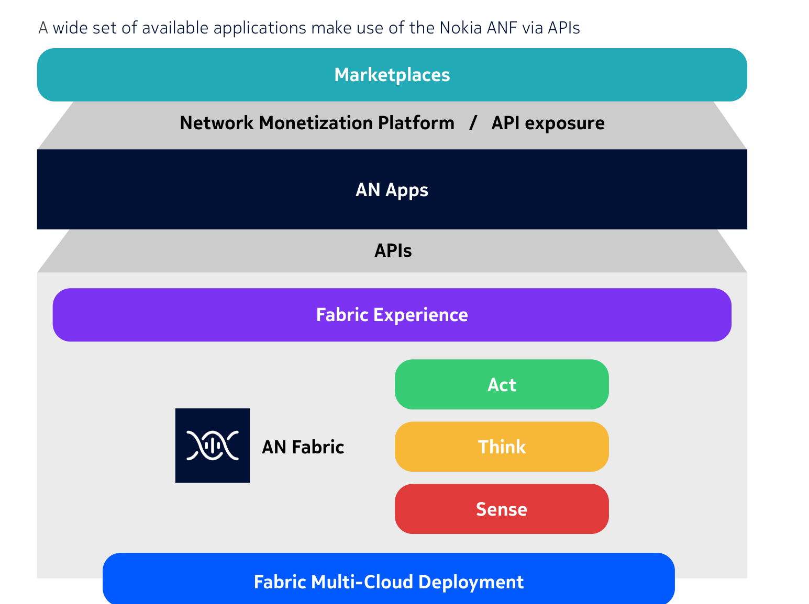

02 Industry & competition
行业环境或竞争现状
行业处于「愿景已定、研究展开、规范未冻、厂商抢位」的窗口。ITU已给出IMT-2030总体框架；3GPP Rel-20推进6G研究，Rel-21将成为首个规范性6G Release；数据框架、AI使能与跨域自动化仍在形成关键问题与候选方案。[S1] [S2] [S3]
2.1 6G数据架构的范式转变与数据管理层需求
5G的主架构叙事仍以连接、会话、网络功能和暴露为中心，数据分析主要集中在NWDAF、MDA等特定能力。6G的变化不是「多一个数据湖」，而是网络中几乎每个域都可能同时生产数据、消费数据、运行模型并执行动作：RAN产生无线测量、调度、波束、拓扑与感知数据；Core关联会话、策略与业务上下文；SMO/RIC承载管理与智能控制；边云提供训练、推理与孪生运行时。Nokia也明确把data prosumer、数据目录、抽象、产品与生命周期列为AI-native 6G使能能力。[S8]
6G数据架构范式转变
5G以连接和中心分析为主，6G走向分布式数据生产消费、近源处理和可信智能控制。
5G/5G-A 主导范式
6G 数据—智能原生范式
RAN / 接入 测量与用户流量
Core / 管理 会话、策略、OAM
中心分析能力 NWDAF / MDA / 湖仓
报表 / 优化建议
RAN数据生产/消费 无线事实 · ISAC · 本地AI
Core / 业务上下文 意图 · 会话 · 暴露
边云算力与孪生 训练 · 推理 · 仿真
SMO / RIC / OAM 跨时标策略与闭环
可信数据管理层 语义 · 任务适用性· 契约 · 策略 · 证据
连接中心 → 数据/智能中心
范式变化不是取消网络功能，而是给分布式网络增加统一的数据理解、策略与证据层
图2｜范式转变。 从「特定分析功能消费数据」转向「每个域都是数据生产者/消费者（prosumer）」。右侧为本文综合，不是3GPP既定统一架构。
AI原生 数据成为模型生命周期燃料 训练、验证、部署、监控、回滚都依赖数据/特征/模型/策略版本一致。AI错误将从「判断偏差」升级为「网络动作风险」。
通感一体 网络成为高敏感数据生成器 ISAC产生位置、轨迹、目标与环境数据，必须近源最小化、用途绑定、短期保留，并把置信度作为产品属性。
边云一体 算力和数据位置共同决定架构 快环不能依赖远端目录；慢环可做跨域优化。架构要能在「数据到智能」和「智能到数据」之间动态选择。
数字孪生 网络状态需要一致快照 NDT必须关联拓扑、配置、遥测、模型与业务上下文；没有事件时间、版本和血缘，仿真结果不能成为闭环证据。
跨域自治 局部智能必须服从全局约束 RAN、Core、云、业务多个Agent可能目标冲突，需要意图分解、策略仲裁、风险预算、租约、熔断和人工接管。
生态开放 数据与能力将以产品/API外延 Open Gateway正在推动标准化网络API；但真正变现取决于跨运营商一致语义、计量、商业渠道与行业工作流，而非接口数量。
由六类场景反推：6G对数据管理层提出八项刚性需求
上述场景不是六个功能孤岛。它们共同改变了数据管理层的目标：从「把数据送到分析平台」转为「在多域、多时标、多主体之间，持续提供机器可理解、策略可约束、结果可验证的数据与制品」。因此，6G数据管理层至少应满足以下需求。
R1
统一发现与语义寻址
消费者不仅要知道数据位于哪个接口/Topic，还要知道对象、时间、空间、配置版本、业务含义和权威源。RAN小区、E2对象、O1 DN、Core会话、云资源必须可关联。
验收：跨域对象映射率、语义版本覆盖率
R2
按需采集与近源减量
ISAC、UE测量和高频遥测不能默认全量上送。管理层需按消费者SLO编排采样、过滤、聚合、特征提取、匿名化，并决定数据移动还是模型下沉。
验收：重复采集下降率、跨域字节/有效任务
R3
跨时标多模式交付
亚10ms内环、Near-RT、Non-RT/OAM和月度训练不能共享同一在线依赖。需同时支持本地状态、流、变更捕获、批、联邦查询、缓存和异步制品同步。
验收：分时标P99、新鲜度与截止期达标率
R4
通信级任务适用性
完整性与新鲜度不够。无线数据还要描述采样代表性、对象/频段/波束覆盖、时间同步误差、配置一致性、测量置信度和训练—服务分布偏差。
验收：适用性信封覆盖、suspect/incomplete比例
R5
数据—模型—策略—动作血缘
每个模型结论和网络动作必须可追溯到输入数据、特征定义、模型版本、策略、作用域和结果；反馈还要能反向修正采集、质量与模型。
验收：端到端证据链覆盖率、回放成功率
R6
用途、安全与主权强制
身份、同意、目的限制、驻留、保留和删除必须贯穿查询、API、导出、特征库、向量索引与模型训练，而不是只在目录挂标签。
验收：跨路径策略一致率、删除传播时长
R7
有界智能与冲突治理
多个Agent、模型和闭环可能争夺同一资源。数据管理层需提供身份、委托权限、风险预算、动作租约、冲突仲裁、仿真、熔断和人工接管证据。
验收：越权拦截、无效动作率、回滚耗时
R8
数据产品与跨组织运营
向Core、行业平台和伙伴输出的数据需具备Owner、契约、任务适用性、用途、SLO、成本与退出机制，并能与CAMARA/Operate API、数据空间合同和计量体系衔接。
验收：复用消费者数、契约合规与单位收入
数据管理层的目标由此明确：不是建立一个更大的数据池，而是建立一套跨域、跨时标的「数据供应与行动证据控制系统」 。它必须允许执行分布在RAN/Core/边云，同时统一语义、质量、策略与责任。
2.2 数据编织能力全景、演进、与6G结合及关键挑战
在展开能力清单前，必须先回答核心问题：Data Fabric能否满足R1—R8？ 数据编织不是6G新增网元，而是一种跨异构、分布式环境的数据管理与集成设计：以主动元数据、语义、质量、策略和编排构成逻辑控制面，在不强制物理集中前提下交付数据产品。它与6G需求高度同构，但通用企业Data Fabric并不能原样进入通信网络。
结论：架构机制总体适配
数据分布但元数据统一、控制与执行分离、多模式集成、主动元数据、数据产品和贯穿治理，分别对应R1/R2/R3、R5、R8与R6。Data Fabric可以成为6G数据管理层的设计骨架 ，尤其适合Non-RT/管理域、跨域数据供给及快环的环外支撑。
但必须通信级增强
通用Fabric缺少RAN对象与时空语义、无线数据适用性、亚秒时标隔离、动作安全、NDT证据门槛和多Agent冲突治理。它不能替代RAN协议、SA2/SA5功能或O-RAN接口，也不能成为毫秒快环的远端在线依赖。
L6
业务、生态与网络行动 网络API · 行业数据空间 · RAG/Agent · 运营闭环 · 自动控制
成熟度：传统消费高；受治Agent低
L5
数据产品与可信自助 产品目录 · 数据契约 · 语义指标 · 任务适用性/ SLO · 计量与价值
成熟度：试点增多，跨域语义偏弱
L4
主动元数据与智能控制面 目录 · 血缘 · RAN/Core语义 · 策略 · 推荐 · 影响分析 · 自动化
成熟度：被动目录成熟，主动闭环中等
L3
集成、编排与跨时标数据平面 批/变更捕获/流 · 联邦查询 · O1/E2/A1/R1适配 · 缓存 · 工作流
成熟度：中高；多接口统一语义不足
L2
近源处理、运行时与存储节点 DU/CU/MEC处理 · SMO/Non-RT · 湖仓 · 特征/向量/图 · NDT
成熟度：组件高；跨域编排中等
L1
分布式权威数据源 UE · RU/DU/CU · RIC · Core NF · O-Cloud · OSS/BSS · ISAC/NTN
成熟度：数据存在；权威语义分散
横切
通信级保障 身份 · 质量 · 安全隐私 · 时间同步 · 驻留 · 审计 · 可观察 · 能耗/成本
难点：跨路径一致强制与可证明
当前成熟度：基础组件成熟，通信级控制闭环未成熟
成熟度必须分层判断，不能因为目录、湖仓或流平台已经商用，就宣称「6G Data Fabric成熟」。截至研究截点，L1—L3的大部分组件可买可建；真正决定Fabric是否成立的L4主动元数据、L5产品化、R7有界智能和跨路径横切治理仍处在试点或研究阶段。
组织落地闸门：不能从连接器直接跳到自治
G0
边界与语义 场景、Owner、对象、时间、配置、权威源和用途明确；没有这一步，自动化只会传播歧义。
G1
只读可观察 目录、Schema、任务适用性、血缘可查询，先证明能回答「哪份数据对应哪个网络状态」。
G2
产品与契约 高频输出产品化，契约进入持续集成，消费者、成本、复用和退出可度量。
G3
影子闭环 系统只给建议，对照人工与真实结果；高风险动作先在孪生/沙箱演练。
G4–G5
有界自治与跨域 白名单低风险动作自动执行；内部证据稳定后再向Core、行业和伙伴供给产品。
成熟度结论： Data Fabric作为企业数据架构已进入产品化阶段；作为6G通信级数据管理层则总体位于G1—G2、局部G3 。厂商已发布的自治平台不等于跨RAN/Core/OSS/BSS、跨厂商的完整6G Fabric已成熟。
结合原则： Data Fabric不应进入所有实时关键路径。设备/RAN内环使用本地状态、预编译策略与已验证模型；Near-RT使用边缘缓存、流式特征和受限动作；Non-RT/SMO承担历史、训练、语义、治理和策略；跨域只供给最小必要的数据产品。
能力演进不是「平台越大越先进」，而是控制面逐步主动化
被动采集有源、有管道
可观察目录、血缘、任务适用性
可产品化契约、语义、SLO
影子闭环建议与结果对照
有界自治白名单、回滚、证据
适配性论证后的剩余挑战
挑战不是对Data Fabric适配性的否定，而是从通用数据架构走向通信级控制系统时必须补齐的工程与治理门槛。

图3｜面向6G的数据驱动分布式自治架构（DDAA）。 图中网络控制、数据与智能单元通过接口协同，说明数据与智能已成为6G研究的一等对象。来源：Electronics 2026, 15(1), 102，CC BY 4.0；学术架构，不是3GPP规范。[S17]
2.3 竞争格局：两类技术架构、三种产品位置，收敛于四类控制能力
6G数据能力尚未收敛为统一Data Fabric。技术层面主要形成“联邦分层”和“网络原生数据拓扑”两类架构；Ericsson与Nokia共享相近的联邦分层底座，差别主要在产品边界和控制入口，Huawei则代表结构上不同的近源执行主张。
因此，本节不再把三家厂商机械对应为三条技术路线，而是回答三个更能影响竞争判断的问题：控制权放在哪里、数据与动作如何流动、技术底座与产品包装分别带来什么优势和代价 。Ericsson以联邦治理进入，Nokia在相近底座上把数据契约连接到自智应用，Huawei重构网络内数据处理拓扑；Data Fabric只作为检验控制能力是否闭合的证据框架，不作为预设终点。
阅读规则： 正文先给架构判断，再解释设计逻辑与竞争含义；规范、产品、案例和原型只承担证据链作用。事实 表示规范、已发布产品或具名部署，架构 表示白皮书与预标准设计，验证中 表示原型或6G愿景。名称相似不等于控制体系已经统一，公开资料未描述的能力仍记为未知。
2.3.1 判断主线：竞争不是“三家三路线”，而是两类架构如何分配控制权
两类技术架构都来自同一组矛盾，而不是对“Fabric”概念理解不同。6G既要求网络事实留在近源故障域内，又要求跨域语义和策略一致；既要让AI复用高频数据，又不能把全量数据搬到中心；既要扩大自治权限，又必须让每次动作可解释、可回滚、可追责。产品命名和SKU边界会改变进入市场的方式，但不必然构成新的数据拓扑。
约束 1 · 时标 事实在近源 无线状态、移动性和断链生存决定毫秒执行必须留在网元、边缘或域控制器。
约束 2 · 复用 语义要跨域 模型和产品跨RAN、Core、OSS/BSS复用，要求稳定对象、上下文、任务适用性和版本。
约束 3 · 成本 少搬运、多计算 感知、训练和遥测规模推动过滤、特征化与推理向源侧下沉，而非默认集中。
约束 4 · 风险 动作必须回证 Agent输出会改变真实网络，数据、模型、策略、动作与结果必须形成证据链。
联邦分层 · 治理入口 Ericsson：连接既有数据岛 保留RAN、Core、Mediation、湖仓和自动化产品边界，以联邦发现、按需访问和渐进治理减少替换风险。优势是迁移连续；代价是跨产品语义、策略与版本协调。
网络原生 · 执行入口 Huawei：重构数据拓扑 把多源、多处理、多消费者关系建模为可编排网络拓扑，依靠近源算子和专用分发降低搬运与时延。优势是执行控制力；代价是新增可靠性、移动性与状态管理。
联邦分层 · 应用入口 Nokia：产品化数据—自智软件链 技术骨架与Ericsson同属域内事实、联邦访问、治理语义和应用消费；差别在于Data Suite、AN Fabric和AN Apps被组织成更明确的可售软件链，而非形成第三种数据架构。
核心判断： Ericsson与Nokia的主要差别是产品边界和控制入口，不是底层数据拓扑；Huawei才构成明显不同的网络原生执行架构。三种竞争位置都绕不开跨域语义、任务适用性、近源运行时和动作证据四个控制点。
2.3.2 标准只划定竞争边界：先收敛外部行为，不冻结统一平台
ITU-R定义需求空间，3GPP RAN定义无线权威事实，SA2研究系统数据的发现、处理和暴露，SA5管理OAM、分析、AI/ML与NDT生命周期，O-RAN按时标开放数据、策略和动作，TMF/GSMA/CAMARA连接外部消费与运营。它们正在形成一条可组合链路，但没有共同要求一个名为Data Fabric的网元或平台。[S1] [S5] [S6] [S7] [S16]
网络权威事实RAN / Core / OAM
发现与交付SA2 / SA5 / O-RAN
语义与任务适用性稳定ID · 版本 · 用途
授权与动作证据NDT · 策略 · 回滚
外部产品行为API · SLA · 计量
较可能先冻结 跨域必须一致的对象 生产者/消费者角色、稳定标识、最小元数据、交付控制、任务适用性与授权挂钩、动作证据以及一致性测试。ZSM 029对注册、发现、资产和工作流的研究也指向这一方向。[S43]
仍可能多形态 内部拓扑与部署边界 既有DCCF/ADRF/NWDAF/MDA增强、新功能或新平面、边缘Agent与管理侧服务都可能承载同一外部行为；不同数据族也可能选择不同后端。
判断含义 标准不会替厂商选架构 Kafka、湖仓、完整知识图谱、独立Fabric或专用Data Plane仍是实现选择。竞争将从“组件是否存在”转向“接口能否互操作、后端能否替换、责任能否跨域传递”。
2.3.3 两类技术架构、三种产品位置：区分技术异质性与商品化差异
比较结论： Ericsson与Nokia共享“域内事实—联邦访问—治理语义—应用消费—域控制器动作”的相近骨架；前者用复杂协调换迁移连续性，后者用分层SKU换产品化速度。Huawei用新平面复杂度换近源执行控制，才是结构上不同的技术主张。后续厂商分析同时区分技术架构与产品组织，不再把商品化差异误写成第三条架构路线。
E
2.3.4 Ericsson：联邦式演进——用产品连续性换取渐进治理
Ericsson没有从一个新的统一平台起步，而是连接网络域、数据湖和既有产品，在不强制搬迁权威数据的前提下逐步补齐目录、语义、质量和产品能力。
路线A · 存量联邦 · 架构与产品分轨
路线判断： 这是一条“先联邦、后治理”的演进路线。近源采集和产品执行继续分布，统一层负责发现、策略与消费体验；其竞争力来自迁移连续性，风险则是跨产品控制长期碎片化。公开材料支持架构思想连续，不支持“已经形成一个统一商用Data Fabric SKU”。
[S10] [S30]

下载官方图 · 官方白皮书 图4a｜Ericsson 2026 AI-ready data management future-state reference architecture。 官方原图位于2026年1月白皮书p.16，按数据源、摄取、精炼治理和消费支撑组织，并显式包含Data Fabric、目录、质量、血缘、数据产品、ontology/KG、策略执行与AI工具。PDF未给该图正式Figure编号；它是North Star参考架构，不是统一商用SKU。图源及版权：Ericsson。[S10]
架构如何运转
数据流： 数据从网络和业务源进入采集层，在域内完成必要加工，再按需进入精炼治理层，最终以分析、特征、数据产品或API服务消费。重点不是把数据集中到一个湖，而是通过联邦访问和智能移动减少重复采集。
控制流： 目录、元数据、策略、质量与血缘提供跨岛视图；真正的采集、分析和动作仍由Mediation、DataOps、NWDAF、EIAP/rApps及域系统执行。因此，统一的是消费与治理语义，不是所有运行时。
架构含义： North Star把2021年偏摄取和发现的设计扩展到AI-ready治理，但它更像目标控制模型，而非已经完成产品收敛的部署图。[S10]

下载官方图 · 官方架构页面 图4b｜Ericsson 2026 Data Ingestion Architecture（Figure 18）。 相较2021图，EDCA和DRG被明确保留；客户侧DMF与Ericsson侧EFDL/Data Fabric构成新的联邦边界。它证明架构机制连续，不证明所有相关产品已经由一个统一SKU实现；“no data copy”也应理解为减少不必要复制，而非绝对不移动数据。图源及版权：Ericsson。[S57]
为什么选择联邦式演进
权威源天然分散 RAN、Core、OSS/BSS和边缘拥有不同对象、时标和故障域。逻辑联邦能保留源侧责任，避免把物理集中误当成治理统一。
存量产品不可跳过 NWDAF、Mediation、SMO/RIC和客户湖仓已经存在。复用现有接口比整体替换更可执行，也是“分层产品”长期存在的原因。
先统一外部行为 对齐3GPP、O-RAN和开放湖仓，可以先让对象、策略和产品可被共同消费，再逐步决定内部控制是否值得收敛。
三条演进线必须分轨，否则会把架构愿景误写成产品路线
架构继承
EDCA/DRG仍在： 2026 Figure 18保留2021年的EDCA和DRG，并连接客户侧DMF、EFDL与EFDL Data Fabric；DDC/GDC名称消失只能说明功能重组，不能判断已被替代或退役。
[S30] [S57] 产品演进
Mediation → Telco DataOps： 这是官方明确的产品血缘，新增管道、Catalog、lineage、安全与治理；它不等于EDCA升级，也不包含EIAP、NWDAF或EFDL。
[S21] [S58] 未来架构
North Star与6G愿景并行： AI-ready参考架构面向语义治理和Agent消费；common data plane更关注网络数据与模型的采集、放置和传输。二者有机制交集，没有公开产品继承关系。
[S9] [S10]
竞争优势 渐进接入、多后端和源侧权威能降低大规模替换风险；联邦路线更容易进入已有Ericsson与异构数据栈的运营商。
结构性代价 目录、Schema、任务适用性、策略和版本若不能跨DataOps、EIAP、NWDAF与第三方后端共享，协调成本会抵消迁移收益。
决定性证据 同一版本化数据产品无需项目级重写即可跨产品和第三方后端复用，并在断链、回退与动作回证上满足通信预算。
已证事实 Figure 18延续EDCA/DRG；Mediation、EIAP、NWDAF和API渠道分别有产品或部署锚点。
[S35] [S36] 尚未证明 这些产品共享一个跨域语义、任务适用性、策略和动作证据控制面，或North Star已成为统一客户SKU。
路线停止线 若跨产品协调成本持续高于替换成本，或统一平台在多厂商网络以更低TCO完成同一任务，联邦优势会下降。
H
2.3.5 Huawei：网络原生拓扑——用新数据面换取近源控制力
Huawei从AI/ISAC的数据流约束出发，不先连接既有数据产品，而是把生产者、处理节点和消费者重新组织为可编排网络拓扑。
路线B · 网络原生 · 研究架构与原型
路线判断： 这是一条“先重构执行、再决定治理边界”的路线。DO控制数据处理拓扑，DA/DPF/DSF把计算放到UE、RAN、边缘和Core，DCP以Pub/Sub服务多消费者。它能网络原生地吸收部分发现、编排和交付能力，但不会自动解决跨域语义、任务适用性、血缘与产品责任。
[S12]

下载架构图 · 原始页面 图5｜Huawei提出的6G Data Plane。 控制面由DO编排数据拓扑，DA/DPF在终端、网络和边缘执行数据/AI处理，DCP/Data Spine以发布订阅解耦生产者和消费者。图源：Huawei 2024，原图未修改；厂商研究架构，不是3GPP既定方案。
架构如何运转
控制流： 服务请求向DO声明采集、过滤、聚合、转换、分析或推理目标；DO从能力注册中选择执行节点，拆解操作DAG，并下发拓扑、访问、隐私与资源策略。DO登记的首先是“谁能执行什么”，而不是通用数据资产目录。
数据流： 源DA发布topic，DCP按订阅或带内拓扑把数据异步送往多个处理/消费节点；DA/DPF沿途完成过滤、压缩、特征化、本地推理与缓存，上游模型输出还可成为下游输入。
架构含义： 它把“数据到智能”与“智能到数据”的放置决策做成网络能力，优先解决高频、大体量、多消费者和移动场景，而不是先建设企业级Catalog。缺少通用Catalog不能直接判为路线不完整。
为什么选择专用数据协作逻辑
CP/UP不是为数据DAG设计 SBI偏控制消息，PDU会话围绕连接；AI/ISAC却需要多源、多处理、多汇、异步复用和派生数据链。专用拓扑试图避免把这些关系硬塞进既有会话模型。
全栈触点提供物理落点 终端、RAN、Core、IP、Cloud和AI算力使算子能随数据与资源移动。它解释了架构可行性，但也让运营商更关注单厂商控制和第三方可移植性。
近源减量同时控制暴露 先过滤、压缩、特征化或本地推理，再异步分发，可减少I/Q、点云和梯度回传并限制敏感数据暴露；收益必须覆盖站点资源和新控制状态成本。
控制链条：网络原生执行与外部治理并非二选一
服务意图采集 · 分析 · 推理目标
DO编排能力发现 · 操作DAG · 策略
近源执行DA · DPF · DSF
DCP分发Pub/Sub · 多消费者
异步回证质量 · 血缘 · 动作结果
若Rel-21把Data QoS、授权和生命周期一起纳入网络原生功能，外部控制层的范围会缩小；若标准只冻结交付行为，公共语义、血缘、产品契约和长期历史仍需要管理域或外部数据层。更现实的中间形态是：DA/DCP负责快路径和近源处理，管理层负责跨域语义与证据，两者通过版本化接口解耦 。[S14]
竞争优势 拓扑编排、近源算子和异步多消费者模型直接回应AI/ISAC负载，是三家主张中最强、也最具结构异质性的网络执行控制方案。
结构性代价 新增平面同时新增状态：顺序、持久化、跨站容灾、拥塞、移动性、租户隔离、算子升级和DO容灾都必须重新工程化。
决定性证据 与开启同等持久化和副本的成熟消息系统公平比较，并通过跨站故障、移动性、断链回退、多租户SLA和第三方算子测试。
原型已证明 DCP公开实验约2ms；10 broker、128KB消息约2,394.6MB/s，说明精简路径与横向吞吐具有潜力。
[S12] 比较局限 DCP移除持久化，而RocketMQ对照开启持久化；结果不能外推为同功能全面领先，也没有证明长期可靠性。
部署边界 AUTINOps证明管理域语义与Agent闭环可以部署，但不包含DO/DA/DCP级网络数据面，不能作为DCP商用证据。
[S37] [S38] 路线停止线 若增强SBA/UP或成熟流平台以更低复杂度满足同一负载，或专用平面不能通过持久化、容灾和移动性测试，新增平面必要性下降。
N
2.3.6 Nokia：以AN Fabric编织自智应用——共享数据与AI是内置能力，域控制器执行动作
Nokia的差异不在于提出另一套网络核心数据架构，而在于以AN Fabric作为自智网络应用的公共底座。官方把AN Fabric定义为跨域统一智能层，内部包含共享数据管理、AIOps、安全和自治域服务；Data Suite与其他AN Apps使用这些公共能力，具体资源动作仍由OSS、SMO、RIC、SON和域控制器执行。
自智应用编织 · 公共数据/AI底座 · 域控制器执行
架构判断： AN Fabric既不是纯业务层，也不是替代Huawei/Ericsson核心数据架构的网络数据平面；它是自智网络的公共智能服务平台。其Data Management Services以Data Mesh和数据产品统一供给，AIOps与Autonomous Domain Services支撑意图、分析和自动化工作流，AN Apps通过内部API使用这些服务。Data Suite官方被列为AN应用栈的一部分，并由AN Fabric驱动，而不是位于AN Fabric上游的独立数据平台。
[S23] [S24] [S39]

下载架构图 · 原始白皮书 图6｜Nokia Autonomous Network Fabric。 多云AN Fabric作为公共底座，通过内部API支撑AN Apps、Fabric Experience与Marketplace。图中未画出OSS、SMO、RIC、SON或网元动作路径，因此只能证明应用与公共服务关系，不能证明AN Fabric直接承担全部资源控制。图源：Nokia 2025，p.7；版权归Nokia。
架构如何运转
数据与AI服务： AN Fabric的Data Management Services从RAN、固定接入、传输、Core、OSS及其他数据源持续采集、治理和关联数据，以Data Mesh和数据产品方式供多个应用复用；AIOps提供统一库存、模型、知识与故障分析。Data Suite把其中的数据产品、目录、血缘、质量和语义能力产品化。
意图与应用编排： AN Apps通过内部API使用AN Fabric的数据、AIOps和自治域服务，把业务或运营意图转成分析、保证与自动化工作流；Fabric Experience、API Exposure和Marketplace承担体验与商业入口。这里承载的是上层意图、跨域协同和应用编排，不等于所有资源控制都集中到AN Fabric。
资源控制边界： Nokia对6G自智网络的公开设计明确区分服务运营层与资源控制层：具体实时动作由域控制器执行，域内保留实时状态、资源库存和自愈能力。MantaRay SMO/SON、non-RT RIC及KDDI Recovery System等案例证明的是域控制执行，不能反推AN Fabric已经成为跨域统一控制面。
为什么选择这条路线：上收公共能力、下放资源控制、外放应用生态
问题起点是自动化孤岛 Nokia首先要解决的不是重新定义网络内数据传输，而是OSS、分析、安全和自动化应用各自采集数据、建设模型和维护流程。ANF把重复的数据管理、AIOps、知识、安全和可观测能力上收为公共服务，使多个AN Apps共享同一基础。[S23] [S39]
既有域控制资产不应重做 MantaRay SMO/SON、non-RT RIC、NSP、AVA及各域OSS已经掌握实时状态、资源模型和动作权限。保留这些控制器，再由ANF提供跨域数据、意图和应用协同，比另建网络数据面更能复用存量；stc和KDDI案例也证明动作由域产品执行。[S32] [S33]
多厂商现网要求渐进商品化 统一接管不同厂商、不同域的实时控制需要同时重做模型、权限、容灾和责任边界，进入阻力高。ANF以SaaS/多云公共底座连接Data Suite、运营、安全和体验应用，既可逐步部署，也能通过API和Marketplace扩展用例与商业入口。[S23] [S24]
路线选择的因果链： 现网已有域控制器和大量自智软件资产 → 真正瓶颈变成数据、模型与自动化流程重复建设 → ANF上收共享数据/AI/安全服务 → AN Apps复用公共能力形成可售用例 → 具体资源动作继续下放给域控制器。Nokia因此选择“公共智能底座 + 应用编织”，而不是另起一套网络原生数据平面。
AN Fabric的真实边界：编织公共智能服务，不替代域级资源控制
网络与OSS数据RAN · Core · Transport · Fixed
AN Fabric公共服务Data Management · AIOps · Security
AN Apps / Data Suite数据产品 · 意图 · 分析 · 工作流
域控制与编排OSS · SMO · RIC · SON
网元动作与回证执行 · 结果 · 自愈 · 回滚
ANF内含数据编织能力 统一数据管理并非AN Fabric外部前置层，而是其公共服务之一：数据被采集、治理、关联并发布为可复用产品，Data Suite负责将这些能力形成面向用户的产品入口。
AN Apps承载意图与用例 AN Apps面向运营、网络安全和用户体验使用公共数据与AI服务，处理业务/运营意图并编排自动化流程；这属于自智应用编织，而不是新的网络核心数据拓扑。
域控制器执行资源动作 服务层给出目标、分析和动作请求，SMO、RIC、SON、OSS及域控制器完成具体控制并保留实时状态。ANF协调跨域信息，不应被画成直接替代所有控制器。
竞争优势 共享数据管理、AIOps、安全和自治域服务被组织成统一应用底座，AN Apps可以复用公共能力快速形成运营、体验和安全用例；优势在自智软件集成与商品化。
结构性代价 “统一智能层”同时覆盖数据、模型、应用和自动化，容易模糊ANF与域控制产品的责任边界；若内部API、第三方应用和控制证据不可导出，会形成多层软锁定。
决定性证据 同一具名部署中，Data Suite数据产品能否被Nokia与第三方AN Apps复用，ANF意图能否经开放接口下发到多厂商域控制器，并把动作、结果与回滚证据返回。
官方架构已证 ANF包含Data Management、AIOps与Autonomous Domain Services；AN Apps经内部API使用公共能力，Data Suite由ANF驱动。
[S23] [S24] [S39] 域执行已证 KDDI覆盖20万RAN，由Recovery System执行恢复；stc的MantaRay Cognitive SON执行>1万次动作。两者证明域控制，不证明完整ANF统一栈。
[S32] [S33] 数据规模信号 匿名Tier-1披露25万小区、27万报告/秒，只支持Data Suite摄取与关联潜力；客户未具名，且没有同步披露AN Apps和域控制贯通。
[S24] 尚未证明 目前未见具名客户公开证明完整ANF已跨RAN、Core、传输和多厂商域统一部署Data Suite、AN Apps、意图编排与资源控制闭环。
2.3.7 收敛点与竞合边界：四个控制点决定产业位置
两类技术架构的内部拓扑不会短期统一，三家也选择了不同产品入口；但它们要进入跨域AI与商业闭环，都必须让四类控制能力彼此衔接。谁能定义这些能力的外部接口，同时允许执行层和后端替换，谁才更接近长期平台位置；谁只提供封闭组件或单点应用，谁就仍停留在项目层。
CONTROL 1 跨域语义与身份 定义稳定ID、权威源、配置版本和对象映射，使同一小区、会话、模型与业务对象能跨接口关联。
CONTROL 2 任务适用性与产品契约 定义数据对特定任务是否适用、谁负责、满足何种SLO、如何计量、何时降级或退出。
CONTROL 3 近源运行时 决定过滤、特征、推理与缓存放在哪里，策略如何下发，断链如何生存，版本如何回退。
CONTROL 4 动作证据与接口 把数据、模型、策略、动作、结果和回滚关联起来，并能被第三方审计、导出与一致性测试。
设备商 更接近网络控制点 掌握无线对象、近源资源、域控制器和动作权限，最有条件定义通信数据适用性与运行时；但若Schema、证据和后端不可导出，其端到端能力会转化为锁定。
云与湖仓 更接近规模运行时 Microsoft、AWS、Google、Databricks和Snowflake提供弹性计算、Catalog、流批、模型与Agent工具；适合作为可替换后端，不应进入RAN快环或越过网络授权直接动作。Google Telecom Data Fabric仍为Private Preview。[S25]
聚合与渠道 更接近分发和结算 Aduna、CPaaS与Marketplace掌握跨运营商覆盖、认证、开发者入口、用量和收入分成；它们能倒逼上游统一SLA，却不能反向定义内部采集、任务适用性生成与动作实现。[S18]
最终竞争判断： Ericsson与Nokia在联邦分层底座内竞争不同入口：前者争联邦目录与渐进治理，后者把数据契约产品化并连接自治应用；Huawei争夺数据拓扑与近源运行时。真正的胜负手不是把所有数据收到一个平台，也不是把Data Mesh写成自智内核，而是让跨域消费者遵循稳定语义、任务适用性和证据契约，同时让状态—意图—策略—动作—结果—回滚闭环可验证，并证明运行时、后端与渠道仍可互操作、可替换。
2.4 行业现状小结：共同问题明确，Data Fabric只是可能解法之一
本章先由2.1推导6G数据约束，再由2.2建立Data Fabric参照系，最后以2.3检验标准与厂商事实。能够成立的是机制级判断，而不是“6G数据面必然Fabric化”或“某厂商已经拥有完整6G Data Fabric”。
共同问题已经出现 异构发现、近源处理、跨时标交付、语义/任务适用性、动作证据和外部运营均有真实需求，区别在实现责任与时标。
标准没有预设平台形态 SA2/SA5仍在Rel-20研究；增强既有功能、新NF和混合能力包都可能，独立Fabric或专用Data Plane均非既定结论。
两类架构、三种产品位置 Ericsson与Nokia共享相近联邦分层骨架，分别强调治理入口和自智应用商品化；Huawei强调网络原生数据拓扑。不能把产品包装差异等同于技术架构差异。
证据必须按层拆开 摄取、湖仓、流平台和域应用已有商用；统一语义、跨产品契约和高风险动作证据不能由单点案例外推。
Data Fabric有明确适用边界 它适合跨域发现、治理和产品供给；近源毫秒执行、移动性和无线控制仍应由网络原生机制承担。
尚无端到端胜者 没有中立证据证明任何一家已在多运营商、多厂商环境同时实现公共语义、通信数据适用性、开放后端和可信动作闭环。
现阶段最稳健的断言是：Data Fabric提供了一套有价值的观察语言，但不是6G数据面的预设答案。 应让网络原生方案、外部编织方案和分时标混合方案，在同一组时延、可靠性、语义、任务适用性、证据、开放性与TCO指标下竞争。
{kind=link}
{kind=link}
{kind=link}
{kind=link}